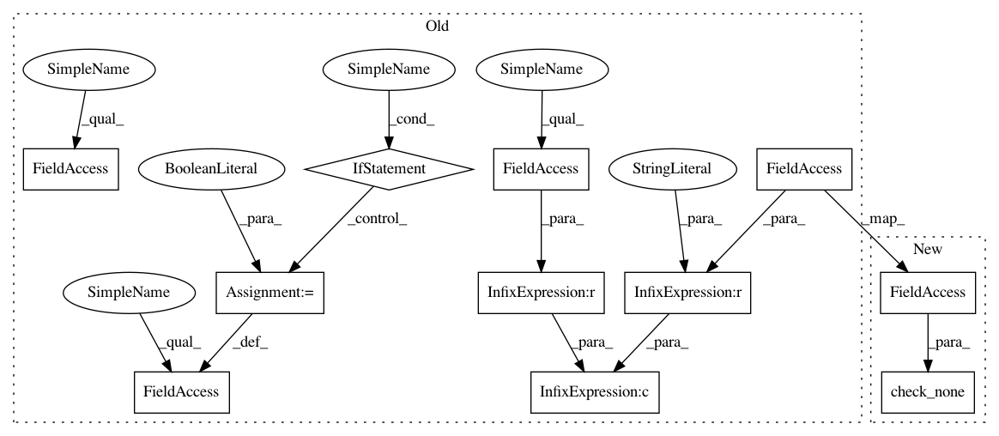

229d418b9e473948294e12310cb87a38f32a831c,autosklearn/pipeline/components/classification/liblinear_svc.py,LibLinear_SVC,fit,#LibLinear_SVC#Any#Any#,30
Before Change
if check_true(self.dual):
self.dual = True
elif check_false(self.dual):
self.dual = False
else:
self.dual = self.dual
if check_true(self.fit_intercept):
self.fit_intercept = True
elif check_false(self.fit_intercept):
self.fit_intercept = False
else:
self.fit_intercept = self.fit_intercept
self.intercept_scaling = float(self.intercept_scaling)
if self.class_weight == "None" or self.class_weight is None:
self.class_weight = None
estimator = sklearn.svm.LinearSVC(penalty=self.penalty,
loss=self.loss,
After Change
self.intercept_scaling = float(self.intercept_scaling)
if check_none(self.class_weight):
self.class_weight = None
estimator = sklearn.svm.LinearSVC(penalty=self.penalty,
In pattern: SUPERPATTERN
Frequency: 3
Non-data size: 11
Instances
Project Name: automl/auto-sklearn
Commit Name: 229d418b9e473948294e12310cb87a38f32a831c
Time: 2018-01-12
Author: eggenspk@informatik.uni-freiburg.de
File Name: autosklearn/pipeline/components/classification/liblinear_svc.py
Class Name: LibLinear_SVC
Method Name: fit
Project Name: automl/auto-sklearn
Commit Name: 229d418b9e473948294e12310cb87a38f32a831c
Time: 2018-01-12
Author: eggenspk@informatik.uni-freiburg.de
File Name: autosklearn/pipeline/components/classification/libsvm_svc.py
Class Name: LibSVM_SVC
Method Name: fit
Project Name: automl/auto-sklearn
Commit Name: 229d418b9e473948294e12310cb87a38f32a831c
Time: 2018-01-12
Author: eggenspk@informatik.uni-freiburg.de
File Name: autosklearn/pipeline/components/classification/liblinear_svc.py
Class Name: LibLinear_SVC
Method Name: fit
Project Name: automl/auto-sklearn
Commit Name: 229d418b9e473948294e12310cb87a38f32a831c
Time: 2018-01-12
Author: eggenspk@informatik.uni-freiburg.de
File Name: autosklearn/pipeline/components/regression/random_forest.py
Class Name: RandomForest
Method Name: iterative_fit